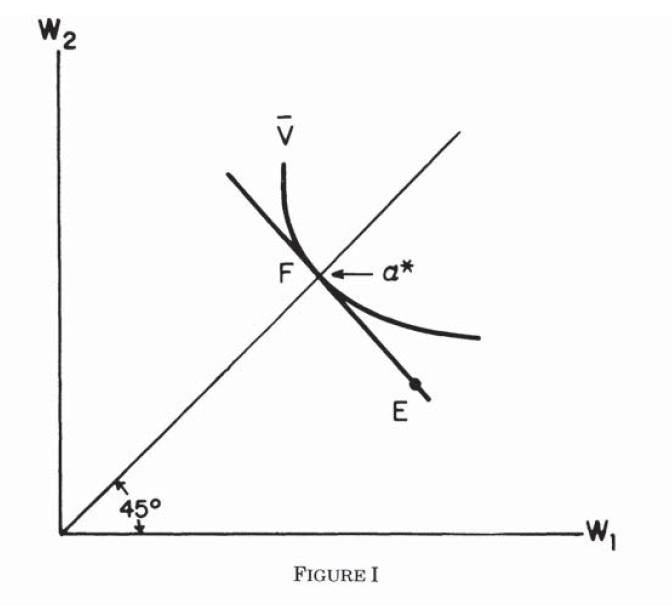
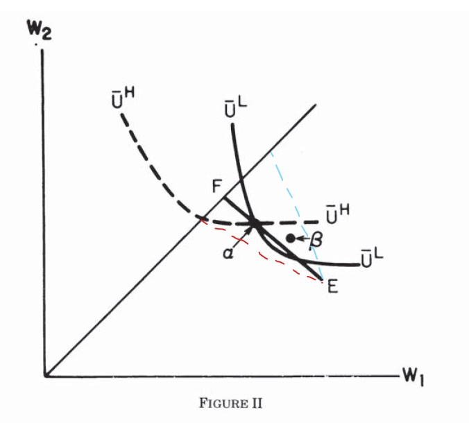
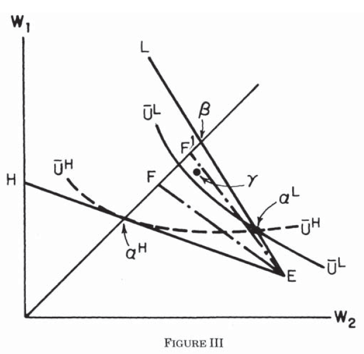

Screening

Consider screening by an insurance context.
Equilibrium in Competitive Insurance Markets
Consider a competitive version of Stiglitz's (1977) two-type model.
Basic Model
Consider a two persons economy, with one risk neutral insurance company and one risk averse customer.
Denote customer's wealth in case of accident absent insurance as: $$W-d$$ So, \(W\) is the original wealth level, and \(d\) represents damage in an accident.
With insurance contract \(\alpha=(\alpha_1, \alpha_2)\), denote the individual's wealth as: $$W_1 = W-\alpha_1$$ $$W_2 = W-d+\alpha_2$$ where \(W_1\) is wealth if no accident occurs, and \(\alpha_1\) is the premium paid to the insurance company. \(W_2\) is the wealth level with accident, and \(\alpha_2\) is the net reimbursement.
Perfect insurance if: $$W_1=W_2 \Leftrightarrow W-\alpha_1=W-d+\alpha_2$$
Demand for Insurance
The individual's utility is (or a contract \(\alpha\) is worth): $$V(p,\alpha)=\hat{V}(p, W_1, W_2)=(1-p)U(W_1)+pU(W_2)=\hat{V}(p, W-\alpha_1, W-d+\alpha_2)$$ where \(p\) is the accident probability. By risk averse, \(U''< 0\).
Individuals' problem is: $$\max_\alpha V(p,\alpha)$$ By participation constraint, the individual buys a contract only if: $$V(p,\alpha)\geq V(p,0)$$
Supply of Insurance Contracts
Profit of insurance company per customer: $$\pi (p,\alpha)=(1-p)\alpha_1-p\alpha_2=\alpha_1-p(\alpha_1+\alpha_2)$$ With free entry and unlimited liability.
Definition of Equilibrium
A set of contracts such that, when customers choose contracts to maximise expected utility:
i) no contract in the equilibrium set makes negative profits; and
ii) no contract outside the equilibrium set that, if offered, will make a non-negative profit.
Equilibrium with Identical Consumers
By free entry and perfect competition, firms make zero profit: $$\pi(p,\alpha)=(1-p)\alpha_1-p\alpha_2=0$$
The equilibrium is efficient, and involves perfect insurance of the risk averse customers by the risk neutral firms. To see this, we can first substitute out \(\alpha\): $$\alpha_1=W-W_1$$ $$-\alpha_2=W-d-W_2$$ Then the firm's profit can be written as follows: $$\pi=(1-p)(W-W_1)+p(W-d-W_2)=W-pd-(1-p)W_1-pW_2$$ where \(W-pd\) is the expected wealth without insurance.
We can get the iso-profit line: $$W_2=\frac{W-pd}{p}-\frac{1-p}{p}W_1-\frac{\pi}{p}$$ This can also be called as fair odds line. If the line passes the autarky point, then it's a zero profit line. Below the zero profit line, the firm makes strictly positive profit.
On the other hand, we can write the firm's problem as: $$\max_{W_1,W_2}\{W-pd-(1-p)W_1-pW_2\}$$ subject to the participation constraint: $$pU(W_2)+(1-p)U(W_1)\geq (=) pU(W-d)+(1-p)U(W)$$
Then write the Lagrangian: $$\max\mathscr{L}(W_1, W_2,\lambda)=\max_{W_1, W_2}\{-(1-p)W_1-pW_2+W-pd+\lambda[(1-p)U(W_1)+pU(W_2)-(1-p)U(W)+pU(W-d)]\}$$ Take FOCs: $$-(1-p)+\lambda(1-p)U'(W_1) \equiv 0$$ $$-p+\lambda pU'(W_2) \equiv 0$$ Then, we get the Borch Rule. The ratios of marginal utilities of income are equated across states under an optimal insurance contract: $$\frac{1-p}{p}=\frac{1-p}{p}\frac{U'(W_1)}{U'(W_2)} \Leftrightarrow U'(W_1)=U'(W_2)$$ As the utility function is increasing and concave, the solution is on the 45 degree line of the wealth space (perfect insurance). For pareto efficiency, the slope of the indifference curve must equal to the iso-profit line.
The competitive solution can be depicted as follows:

where \(E\) is the endowment point, the solution is \(\alpha^*\) on \(F\).Imperfect Information: Equilibrium with two Classes of Consumers
Let \(p_H\) and \(p_L\) denote the probabilities of accident for the two classes of consumers, and \(\lambda\) be the fraction of high risks in the market: $$\bar{p}=\lambda p_H+(1-\lambda)p_L$$
Two kinds of equilibria: pooling and separating. We will look case by case.
Nonexistence of a pooling equilibrium
In a pooling equilibrium, both customers buy the same contract. Look at the following graph:

First notice the indifference curve, the consumers' preference: $$V=(1-p)U(W_1)+pU(W_2)$$ Total differentiate and FOCs: $$\mathrm{d}V = (1-p)U'(W_1)\mathrm{d}W_1+pU'(W_2)\mathrm{d}W_2=0$$ $$\frac{\mathrm{d}W_2}{\mathrm{d}W_1}=-\frac{1-p}{p}\frac{U'(W_1)}{U'(W_2)}$$
Notice that the slope coefficient: $$\frac{\mathrm{d}}{\mathrm{d}p}\left(-\frac{1-p}{p}\right)> 0$$ Thus, the higher the risk \((p)\), the less negative (greater) is the slope. The indifference curve is flatter. Further, notice that single crossing property holds.
Now, line \(EF\) is the zero profit line, with the slope \(-\frac{1-\bar{p}}{\bar{p}}\). In equilibria, no firm will have strict negative profit. Suppose in a pooling equilibrium \(\alpha\) is offered. Then, consider contract \(\beta\). Since \(\beta\) is below the high type's indifference curve but above the low type's indifference curve, only the low type will accept the contract. The blue dashed line is the zero profit line if consumers are low types. Thus, the firm can make strictly positive profit. So \(\alpha\) cannot be a pooling equilibrium.
One can show that for every \(\alpha\), such \(\beta\) exists. So there is no pooling equilibrium exists.
Existence of separating equilibrium
If there is an equilibrium, then it must be separating. Look at the following graph:

The set \((\alpha^H, \alpha^L)\) is the only possible equilibrium for a market with low and high risk individuals. The restrictions are satisfied by exactly one pair of contracts.Apart from the two types indifference curves and zero profit line \(EF\), \(EH\) is the zero profit line on high risk individuals, with slope \(-\frac{1-p_H}{p_H}\). \(EL\) is the zero profit line on low risk individuals with slope \(-\frac{1-p_L}{p_L}\).
\(\alpha^H\) is easy to understand (same as above), and the low type will not deviate to \(\alpha^H\) as it is below the low types' indifference curve. But we also need \(\alpha^L\) to be such that the high type will not deviate. Thus, it has to be on the intersection of the two indifference curves. This is the incentive constraint.
However, \((\alpha^H, \alpha^L)\) need not be an equilibrium. If the fraction \(\lambda\) (high risk individuals in the market) is small, the the overall zero profit line rotates clockwise to \(EF'\) (the slope of the indifferent curve becomes more negative). Then, look at the point \(\gamma\). Both low type and the high type prefers \(gamma\), and the firm makes strictly positive profit. Then, \((\alpha^H, \alpha^L)\) is not an equilibrium.
We have already concluded that there does not exist a pooling equilibrium. Thus, if the fraction of the high risk individuals in the market is small, there is no equilibrium. In this case, the costs to the low risk consumer of cross subsidisation (pooling) are low. This also includes the case where the probabilities of the accidents are not too different.
Results
1. Competitive Equilibria may not exist.
2. If a competitive equilibrium exists, it is a separating equilibrium. These are what we have discussed right above.
3. Competitive equilibria are Pareto inefficient. High risk individuals exert a negative externality on low risk individuals (cross subsidisation). However, high risk individuals do not
benefit from this. Everybody could be weakly better off, and the low type could be strictly better off, if the high risks revealed their type.
4. If an equilibrium exists it involves nonlinear pricing. We will discuss non-linear pricing later.
We can also use Wilson equilibrium or mix strategies to get existence of equilibria. Note that the pooling equilibrium in a sense that low type and high type chooses the same contract does not exist.
Nonlinear Pricing and Asymmetric Information
This can also be referred to price discrimination in the industrial organisation context. This is a way to screen the buyers. Here we only discuss the second degree price discrimination. This is also called nonlinear pricing, or discrimination by self selection.
One typical nonlinear pricing is two part tariff. The total amount of money paid for consuming \(s\) units of goods is: $$T=f+ps$$ We can understand the \(f\) as a fixed fee, and \(p\) is the price per usage. If divide this by \(s\), we can get the unit price: $$\frac{T}{s}=\frac{f}{s}+p$$ This affine function type pricing is called nonlinear pricing in economics context, though it is still linear in mathematic context.
Model (The two type case)
The pricing in this model can also be called as menu pricing. There are two consumer groups with preferences described by the utility function: $$U= \begin{cases}\tilde{\theta}V(s)-T, &\text{ if they pay } T \text{ and consume } s \\ 0, &\text{ otherwise } \end{cases}$$ where \(\tilde{\theta}\) is a taste parameter. For a proportion \(\lambda \in [0,1]\) of consumers \(\tilde{\theta}=\theta_1\), and the remaining \(\tilde{\theta}=\theta_2\).
We impose the further assumption: $$\theta_2> \theta_1> c$$ where \(c\) is the producer's constant marginal cost of production. For some results, we use a particular functional form: $$V(s)=\frac{1-(1-s)^2}{2}$$ where \(s \in [0,1]\). Consumers with a higher taste parameter attach a higher value to extra units of quality. In other words, at the margin, consumers of a higher type's value increase in consumption more. This justifies the single crossing property. In a formal argument, note that: $$\frac{\partial^2U}{\partial \theta \partial s}=V'(s)>0$$
The difference of attitude towards quality motivates the monopolist to tailor his services to the demand of the consumers:
Group 1: Sell an amount of quality \(s_1\) against a total payment of \(T_1\).
Group 2: Sell an amount of quality \(s_2\) against a total payment of \(T_2\).
First Best (Discrimination with Perfect Information)
If the information were symmetric, then the monopolist's problem: $$\max_{s_1,s_2,T_1,T_2} \{\lambda (T_1-cs_1)+(1-\lambda)(T_2-cs_2)\}$$ subject to: $$\theta_2 V(s_2)-T_2 \geq 0 \tag{IR\(\theta_2\)}$$ $$\theta_1 V(s_1)-T_1 \geq 0 \tag{IR\(\theta_1\)}$$ These are the participation constraints. We can notice that these constraints must be binding at an optimum (otherwise adjust \(T_1\) or \(T_2\)). Then one has a simplified objective: $$\max_{s_1,s_2} \{\lambda (\theta_1 V(s_1)-cs_1)+(1-\lambda)(\theta_2 V(s_2)-cs_2)\}$$ This is a strictly concave problem in the choice variables. So the solution \(s_1^*\) and \(s_2^*\) is characterised by the following FOCs: $$\theta_1 V'(s_1^*)=c$$ $$\theta_2 V'(s_2^*)=c$$ These conditions indicate that marginal prices equal to marginal costs. The solution is therefore efficient, but the monopolist extracts the full surplus from the consumers. The monopolists profit is: $$\lambda S_1(c)+(1-\lambda)S_2(c)$$ and the consumer receives zero surplus. How to compute the surplus \(S_1\) and \(S_2\) is not important here.
This can be implements by the following two-part tariffs: $$T_1=S_1(c)+c$$ $$T_2=S_2(c)+c$$